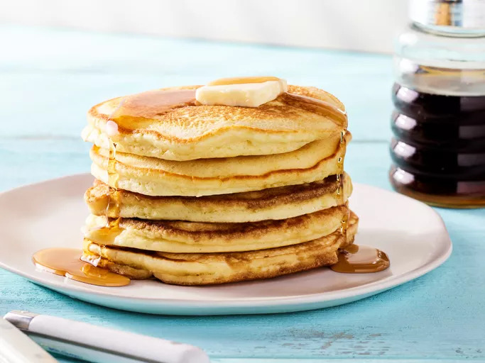

Home
Pancakes

Description
These flapjack pancakes are quick, easy, and turn out fluffy every
time.
The recipe can be easily adjusted to your dietary needs, too. I have tried
many recipes; this one is simple, yummy, and fail-proof! A word of
caution: they are very filling.
Ingredients
- 2 cups all-purpose flour
- 3 tablespoons white sugar
- 2 teaspoons baking powder
- 1 teaspoon baking soda
- ½ teaspoon salt
- 2 cups milk
- 2 large eggs
- ¼ cup canola oil
- cooking spray
Steps/Preparations
- Gather all ingredients.
-
Whisk flour, sugar, baking powder, baking soda, and salt together in a
large bowl until no lumps remain.
- Add milk, eggs, and oil; whisk until batter is runny and smooth.
-
Heat a nonstick griddle over medium heat and lightly coat with cooking
spray.
-
Working in batches, ladle a generous 1/4 cup batter for each pancake
onto the preheated griddle and cook until bubbles appear, 3 to 4
minutes. Flip and cook, pressing the middle gently with a spatula, until
the bottom is lightly browned, 2 to 3 minutes more. Repeat with
remaining batter.
- Serve and enjoy!